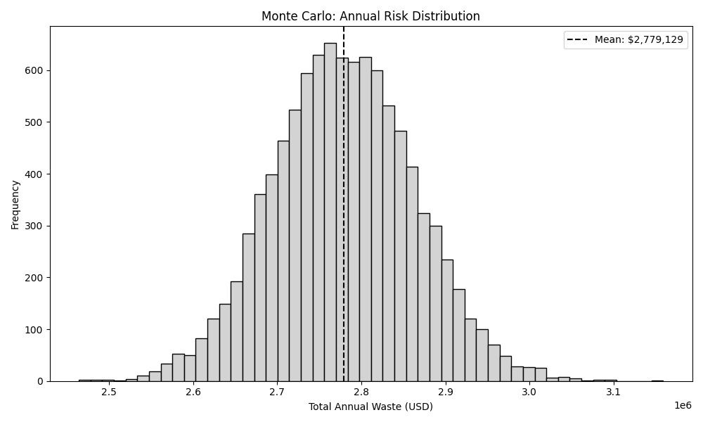

DIRAC: A Forensic Framework for Quantifying Engineering and Financial Leakage in the Era of Large Language Models
Deterministic Integrity & Risk Assessment Core (DIRAC) v1.0
Summary
While industry leaders report that 41% of new commercial code is AI-generated [1], there is a significant Quality issues that is emerging. Recent studies also shows that 44% of AI initiatives are being rolled back due to operational costs [2]. Total development process has actually slowed by 19% as teams struggle to integrate “messy” AI logic [1].
Current metrics which are used for tracking engineering productivity lacks something very critical, the Hidden cost of AI generated code. While companies are focused on the velocity and cost of utilizing token by buying licenses from AI vendors, there is a complete lack of visibility in Review Tax.
Review Tax is the massive amount of valuable and expensive senior engineering time spent fixing, auditing and refactoring AI generated code that might appear correct but are structurally fragile. Over time this leads to delays and significant waste of capital.
Recent research from UC Berkeley [3] showed that these benchmarks can be manipulated and do not reflect the real-world performance.
Deterministic Integrity & Risk Assessment Core (DIRAC v1.0) is a forensic framework designed to move beyond simple dashboard and DORA metrics [4].
I have analysed over 2000 open source repositories with 10,005 commits and quantified the Information Entropy of code changes to map it directly to financial loss.
This paper shows that there is a need to Audit Entropy and protect engineering decay over time.
1. Traditional Metrics in the AI Era
For years, framework like Deployment Frequency, Lead Time (DORA)[4] has been the gold standard for velocity metrics but never designed as a quality metrics. But in the era of AI, it can be potentially be misleading. Here’s how
Multiple deployments can happen in a day but if each of them contain high-entropy code that requires extensive reviews by a senior, then velocity is an illusion.
DORA does not track Review Tax, it fails to show that a single AI generated commit could potentially consume significant senior team’s capacity to ensure that system remains stable after merge.
Traditional metrics cannot see the entropy (disorder) inside a commit. A build will only have either a pass or fail status but
1.1 Moving Beyond Tokens
Most organisation would currently manage their AI costs via Token Utilization dashboard provide by AI vendors. Additionally, organization can have internal tracking to monitor input, output token usage.
Yes, these can show how much an organisation is spending on the AI but it never reveal how much the AI is costing organizational engineering friction.
Data driven decision making requires a forensic approach where State Transition Entropy should to be measured.
It is also essential to understand the true impact on the organization’s bottom line. This is where DIRAC is extremely helpful and provides visibility and governance.
1.2 Comparison of Governance Frameworks
To understand why DIRAC is necessary, we must compare it against the metrics currently used by in software engineering.
While LOC and DORA measures how much and how fast,DIRAC measures the hidden cost of the logic itself, specifically in the world where AI is mainstream.
Table 1.2.1
| Metric A t tribute | Lines of Code (LoC) | DORA Metrics | DIRAC |
| Primary Focus | V olumetric Output | D eployment Velocity | A r c h itectural Integrity |
| S e nsitivity | High (Size only) | Low (Outcome only) | Very High (Logic Entropy) |
| Financial Mapping | None | Indirect / Project Based | Direct (Systemic Friction) |
| AI Context | N egligible | Limited | Optimized ( P r o bablistic Audit) |
| Risk Detection | Post Commit | Post D eployment | Pre Merge (Atomic) |
2. Quantifying the drain
To effectively manage engineering friction, organizations must move to deterministic units of measure.
This framework introduces two primary indicators:
Dirac Density Threshold (\(\Theta_D\)) (Section 3.1)
Systemic Friction (\(S_f\)) (Section 3.2)
2.1 Dirac Density Threshold (\(\Theta_D\))
Dirac Density Threshold (DDT) \(\Theta_D\) is a governance metric design to evaluate the intent behind any code change.
It measures relation between technical complexity of a state transition and contextal metadata on an atomic commit.
In an AI augmented environment, code can be generated with zero cognitive overhead. If this code is merged without human audit then the \(\Theta_D\) falls below the safe baseline.
Therefore by enforcing a minimum DDT, organizations can:
A. Identify Low-Intent Transitions by automatically flag commits where Entropy to Context ratio is high and have high probability that the AI generated codes aren’t verified.
B. Optimizing Engineering Capacity: To ensure that when a senior engineer performs a review, they are auditing high-density, well-documented logic than evaluating noisy probabilistic generated code.
2.2 Mapping Entropy to Systemic Friction (\(S_f\))
Another core innovation of the DIRAC framework is the ability to assign financial value to Information Entropy (\(H_\Delta\)).
This is only possible by analyzing the state transitions and subsequent engineering overhead to maintain these transitions for calculating the Systemic Friction (\(S_f\)).
Review Tax is the measurable impact of this friction which can be calculated using the formula:
\[S_f = (\text{Review Time Cost}) + (\text{Remediation Cost})\]
Where:
Diverted Engineering Capacity: Is the cost of senior engineering time reassigned from new feature development to verifying and stabilizing high-entropy code.
Structural Remediation : Is the technical overhead required to address the code drift causing architectural delay before the code is transitioned to production environment.
By quantifying these frictions, the DIRAC framework allows the organization to calculate the True Cost of a Commit.
Using this framework, organization can now see the direct correlation between high entropy AI generated code and the erosion of the engineering budget including true productivity loss.
2.3 Financial Mapping: Entropy vs Bottom Line
The table below illustrates how DIRAC Risk Unit (DRU) serves as an indicator of Systemic Friction \(S_f\) and business impact.
By categorizing code transitions by their entropy levels, organization can predict the Review Tax before it is actually paid.
Table 2.3: Entropy vs. Financial Impact
This table provides baseline for organizations to translate technical entropy into operational risks.
| Entropy Level | DRU | Risk Category | Potential Review Tax | Business Impact |
|---|---|---|---|---|
| 0.0 - 5.0 | <0.5 | Low (High Intent) | Minimal | High Feature Velocity: Clean transitions, rapid delivery. |
| 5.1 - 15.0 | 0.5 - 1.0 | Medium (S tandard) | Moderate | Maintenance Mode: Standard review overhead required. |
| 15.1+ | >1.0 | E xtremely High (Black Swan event) |
S ignificant | Structural Decay: High probability of rework. |
Section 3. Risk Forecasting for the Enterprise
Traditional reporting structures often rely on linear growth models and monthly averages to assess the health of software systems.
However, in an era of AI based development, these numbers can hide the accumulation of potential risks and structural integrity in software systems.
3.1 Visualizing Annual Exposure via Monte Carlo Simulations
Monthly averages provide a view of performance that can mask high-entropy events.
A system may appear to be stable on a dashboard. While a single high-entropy state transition can have a very high level of complexity , low contextual intent introducing code drifts.
This will consume engineering resources weeks or even months later, creating a Black Swan [5] event.
In this framework, I have applied Monte Carlo simulations with over 10000 iterations (\(n=10,000\) iterations) to model annual budget exposure.

Figure 3.1.1 illustrates the probability of Black Swan [5] budget spikes. While most days can be stable, high-entropy events can drain weeks of engineering capacity in a single transition.
By simulating the distribution of Dirac Risk Unit (also represented as \(\Upsilon_D\)) across these cycles , the framework calculates 95% Value at Risk (VaR).
This forensic approach moved beyond static reporting and help software companies to understand statistical probability of structural decay and impact on long term stability of a system.
3.2 The Capacity Loss Ratio (\(R_c\)): Reclaiming Engineering Hours
The final strategic output of the DIRAC audit is the Capacity Loss Ratio (\(R_c\)).
This metric shows the specific percentage of total engineering capacity that is absorbed by the Review Tax.
It allows the organisation to visualize the Effective Workforce vs Actual Workforce.
Based on the forensic baseline of 2000 pen source repositories, the analysis identifies an \(R_c\) of 24.16%.
Let me try to put this in perspective for a global engineering profile:
Baseline Salary: $150,000 USD
Annualized Review Tax \((150,000 \times R_c)\) = \(36,240\) USD
The Effective Capacity: Which means for every 50 engineers on payroll, the organization is receiving the effective output of only [50 (1 - 0.2416)] \(=\) 37.92 which is approximately 38 individuals.
The remaining capacity is not lost to laziness or lack of effort; it is the invisible tax representing diverted senior engineering efforts to stabilize high-entropy state transitions caused by AI code.
DIRAC makes this visible so organization can implement Automated Governance Gates to lower this systemic friction \(R_c\) and reclaim the lost budget.
Section 4. The DIRAC Governance Strategy
The objective of DIRAC framework is to help organization from passive observations to Deterministic Governance by leveraging forensic indicators mentioned in the previous sections.
This can help organization and leadership to implement Automate gates to protect the system’s integrity without impacting development velocity.
4.1 Implementing Automated Governance Gates
The primary mechanism for reclaiming engineering capacity can be the implementation of pre-merge Governance Gates.
Unlike traditional unit testing, which focus on syntax and execution, DIRAC gates focuses on Information Entropy (\(H_\Delta\)) and the Dirac Density Threshold (\(\Theta_D\)).
The governance protocol can operate on:
High-Intent Transitions with low Dirac Risk Unit (DRU) (\(\Upsilon_D\)): Changes that fall within the safe \(\Theta_D\) baseline are fast-tracked. These transitions represent high-intent, well-documented logic that minimizes the Review Tax.
Incomprehensible Transitions with High Dirac Risk Unit DRU \(\Upsilon_D\)): Changes that exceed the risk threshold are automatically flagged for a mandatory forensic audit.
By filtering these transitions at the atomic level, organization can ensures that senior engineering capacity is only diverted to changes which has a high probability of structural impact. At the same time keep the entropy low and system stable.
4.2 Transitioning from “Pattern-Matching” to “Architected” Engineering
There is a widespread use of AI and the shift of software development is more towards pattern matching code.
These code gets accepted because it could look familiar and it may not be architecturally sound. This is the one of the root cause of Capacity Loss Ratio (\(R_c\)).
In DIRAC, the governance strategy enforces organization to make Invisible Tax visible. This framework incentivizes developers to provide the necessary contextual density for every AI assisted change.
This ensures that:
Human Intent remains the Primary Driver: AI is utilized as a tool, but the structural integrity is governed by deterministic human-verified thresholds.
Using frameworks to identify inefficient manual refactoring of high-risk modules, allowing the organizations to isolate and resolve only the high-entropy modules that pose a systemic risk.
5. Efficiency in AI Augmented Environments
Integration of Large Language Models (LLM) into the software lifecycle is an irreversible shift. This however, currently lacks transparency regarding code entropy and stability of system and poses and significant risk to the long term stability in the software industry.
DIRAC framework provides the necessary forensic layer to manage this transition.
By quantifying the Review Tax and identifying the Capacity Loss Ratio (\(R_c\)), organization can move beyond the Illusion of velocity and make data-driven decisions that protect their human capital.
The goal is not to limit the use of AI, but govern it and govern it well. By reclaiming the 24.16% of lost capacity identified in this study, organizations can ensure that their engineering teams remain focused on building the future, rather than remediating the structural decay of the past.
6. Automated Remediation: The Transition to Autonomous Governance
This section dives into the mitigating the structural delay identified in this research.
In the next phase (version 2.0), the DIRAC framework will transition from detection to remediation by proposing Reinforcement Learning [6] Learning (RL). It will be designed to optimize the state transitions.
6.1 The Policy Objective
The objective of this remediation would be to design a dynamic optimization policy to minimize the Dirac Risk Unit (\(\Upsilon_D\)) while maintaining engineering velocity.
This layer learns organization’s specific patterns to provide adaptive governance.
6.2 The Strategic Reward Function (\(R\))
RL will utilizes a reward function to guide governance. The function penalizes high-entropy transitions and rewards contextual density ensuring the system will always remains stable.
\[R = \text{Velocity} - (\omega_1 \cdot \Upsilon_D + \omega_2 \cdot H_\Delta)\]
\(\omega_1, \omega_2\): Weighting coefficients calibrated to the organization’s specific risk \(\Upsilon_D\): The real-time risk unit of the proposed state transition.
By framing remediation as an optimization problem, DIRAC helps flagging or rejection of atomic deltas that pose a threat to system stability.
Section 7. Future version (v2.0): Moving from Structural Entropy to Semantic Fragility
While Version 1.0 of the DIRAC framework addresses Structural Entropy, the next version of this research will focus on the deeper layer of Semantic Fragility.
The next version involves tracking how logic shifts over time based on historical entropy over time due to AI assisted code.
This will help in analysing long term trajectory of \(\Upsilon_D\), DIRAC can move towards predictive failure modelling.
The goal is to provide leadership, the ability of predict the system failure based on historical entropy trends before atomic commits are made to the systems.